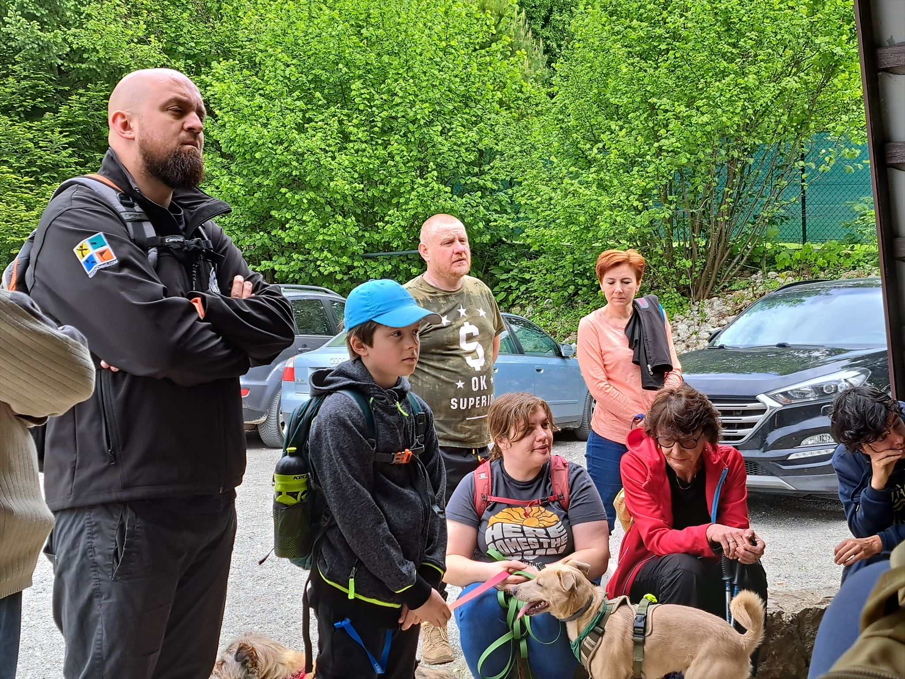
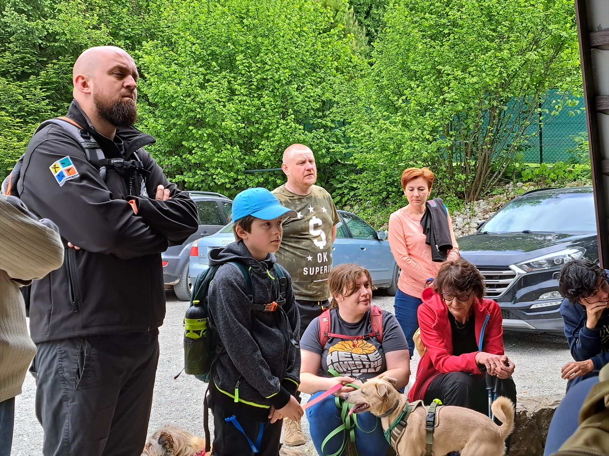
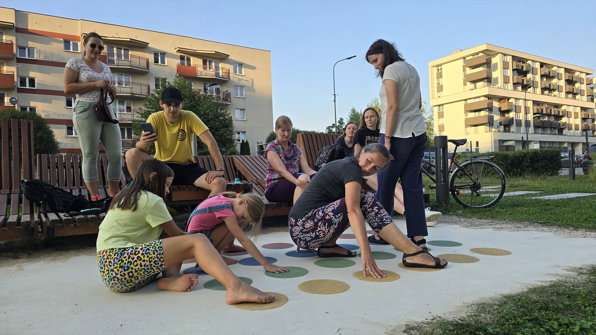
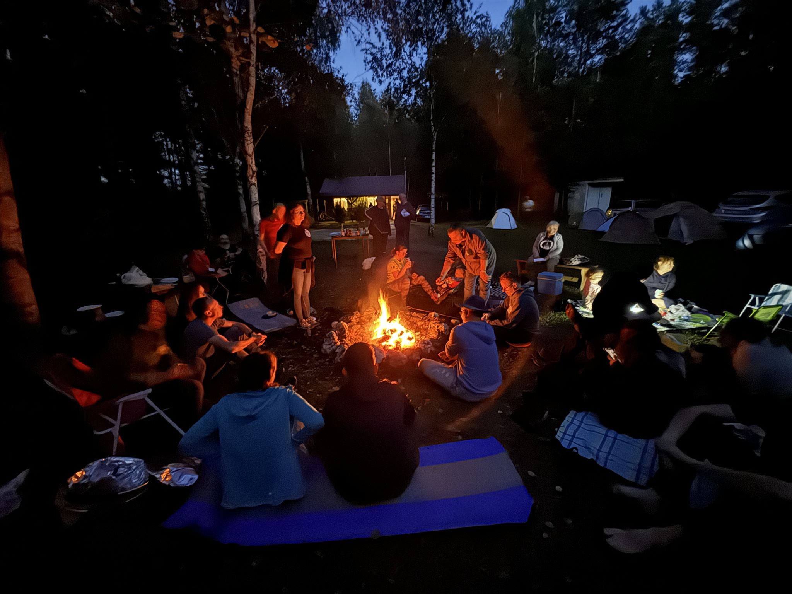
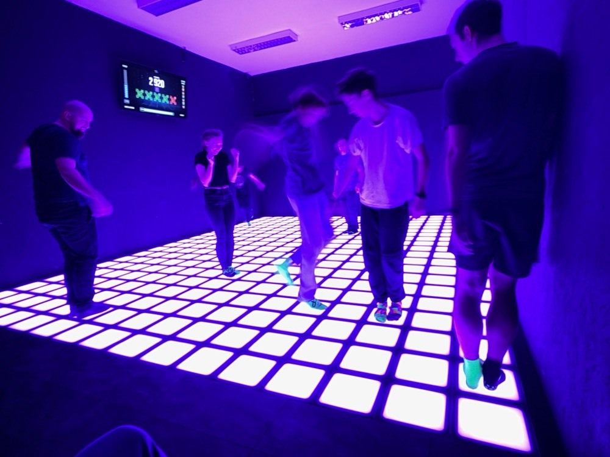

Styczeń
urodzinki, debaty i erfy
18-tka
GCAJ1VX 4 stycznia nemrodek
18-tka
GCAJ1VX 4 stycznia nemrodek


üß± ZTK üß±
cały rok Dominisia_krk
üß± ZTK üß±
cały rok Dominisia_krk
- styczeń - listopad
- 25 eventów
- 422 attendów*
- 65 keszerów (nicków)*
- üß± ZTK - Bastion III "Kleparz" üß± - GCAQDV3 - 25 keszer√≥w (nick√≥w)* i 2 pieski (najliczniej odwiedzony event)
*dane zebrane z logbooka, nie ze strony
üß± ZTK üß±
cały rok Dominisia_krk


GeoForum: Debaty i dialogi
GCAHA7A 11 stycznia barucci
GeoForum: Debaty i dialogi
GCAHA7A 11 stycznia barucci


2024: Odyseja Earthcache!
GCAHCT4 13 stycznia CopernicusHigh
2024: Odyseja Earthcache!
GCAHCT4 13 stycznia CopernicusHigh


ü•ÇüéÇüçæDrugie GeoUrodzinyüçæüéÇü•Ç
GCAJ3Y8 20 stycznia Quard32 & udar2 & Kasia_2014
Eventy
Eventy 2024
Liczba eventów w Krakowie
147
Liczba eventów w Małopolsce
201
Liczba CITO w Małopolsce
12
(attendy)
(attendy) - w Krakowie
Wspomnienia z 2024
kranfagel

19 dni ciągłości FTFów! + Stworzenie grupy Geocaching Kraków na WhatsApp.
gorgony

Skończyłem ciągłość :)
(ale nie wiem ile dni, coś koło 1099 dni)
malpep

uczestniczyłam w 85 eventach (8 poza moim województwem - pomorskim i 7 poza Polską)
Prezes201

W sylwestra rok temu wbiłem 3 tys znalezień i zaczynając rok od równej liczby postanowiłem sobie dobić do 5 tys przez rok. Cel spełniony, nawet za bardzo bo zaraz stuknie mi 5500.
Z-DNA

Naszym głównym zadaniem na 2024 było zrobienie ciągłości, co się udało, a i fajnie wyszło, bo to był rok przestępny. Zadanie zakończone na początku czerwca.
Zadanie dodatkowe - zbieranie skrytek do matrixa przy okazji wyjazd√≥w, bo "w domu tego nie masz" üôÉ no i po zalogowaniu naszych bardzo brzydkich zaleg≈Çości, chwilę przed grudniowym wyjazdem do Szczecina okaza≈Ço się, ≈ºe jesteśmy o jedną skrytkę od 10-tego obiegu i... No kurde totalnie przypadkiem okaza≈Ço się ≈ºe taka skrytka czeka na nas w Krakowie! I to jeszcze czeka dos≈Çownie, bo by≈Ça to rozwiązana jakiś czas temu zagadka. Uznaliśmy, ≈ºe trzeba ją podjƒÖƒá jeszcze w tym roku ≈ºeby wej≈õƒá w 2025 rok z 10-cioma matrixami. W sumie ≈Çadnie się sk≈Çada, bo mamy 10 matrix√≥w na 10 lat keszowania, kt√≥re wypada nam w≈Çaśnie w 2025.
GoGacekGC

To był rok wyjątkowo wielu atrakcji, które zostają we wspomnieniach, od szalonej wyprawy 29 lutego, przez wszystkie spotkania Zdobywania Twierdzy Kraków, aż po nową serię Korony Szczytów Krakowa, jednak najważniejszym dla Gacka wydarzeniem w tym roku było Geocaching Party, do którego budowy udało się dołożyć parę cegiełek.
GoGacekGC
Pogliś

Nasz najlepszy keszersko rok i po raz pierwszy przekroczony 1000 znalezień w roku oraz półroczna podróż pociągami i z namiotem po Europie.
Dominik_112

Pierwszy raz wspiąłem się wysoko na drzewo po kesza GCAJACK Rebus E2.
Bogumilo
Mam dwa takie wydarzenia. Jedno to FTF (nie mam ich dużo :P) i to w Serbii mimo że Internetu nie mieliśmy udało się go zdobyć i wysłać odpowiedzi siedząc w MCDonals na piętrze w Suboticy bo było najbliższe miejsce gdzie dało się złapać Internet :P a drugie to zdobycie największej góry w Bułgarii na której oczywiście także były kesze :)
juleczkap23

Moim osiągnięciem keszerskim roku 2024 była podróż do Danii, gdzie zagłębiłam się w świat LEGO i zdobyłam tamtejsze kesze, także uczestniczyłam w evencie nad morzem północnym, poznałam ciekawych ludzi, z którymi wymieniłam się drobnymi pamiątkami.
juleczkap23
Beata1988

Miało być 1000 keszy, jest +800 ale nie ma co narzekać - udało się ogarnąć dwa wyjazdy zagraniczne :)
Leon17171717

Podczas tegorocznych wakacji nad morzem, udało się keszować w Trójmieście i okolicach - najbardziej spodobały nam się skrytki: Gdańsk TB Hotel (GC2EC67) oraz skrytka Post for you[2] (GC93RPT) - szczególnie ta druga sprawiła najwięcej radości, gdy po powrocie do domu z wakacji, po dwóch tygodniach otrzymaliśmy pocztówkę :-)
CopernicusHigh

Rzecz z której naprawdę jestem dumna, to fakt, że w końcu udało mi się zrobić całą serię keszy ma Pomorzu: GC980X9. Ten Pociąg mnie sporo nerwów kosztował: teren miejscami trudny, od domu daleko, a czeker czasami mimo poprawnych odpowiedzi świecił się na czerwono ;) Całość zajęła mi 3 wyjazdy w latach 2021-2024 (w jednym roku nie pojechałam).
zuzix_854

Jeśli chodzi o to co najbardziej zapadło mi w pamięć to na pewno mój pierwszy CITO ostatniej szansy i event andrzejkowy, moją najlepszą skrytką był Festiwal Nietoperzy GCAX6JG, i w sumie od tego roku zaczęłam tak aktywnie keszować.
Jestem dumna że odważyłam się przychodzić na spotkania keszerskie i udało mi się znaleźć aż 86 skrytek w sierpniu.
PL_MASA

Trzy kontynenty, kilka krajów, kilkadziesiąt polskich powiatów - keszowanie jest przyprawą moich podróży :)
Podrzucam też dwa zdjęcia, które pokazują kesza, którego jak do tej pory uważam za najładniejszego jakiego znalazłem.
PL_MASA

Luty
w tym roku dłuższy niż zwykle
I ♥ Geocaching
GCAHWFG 14 lutego barucci
I ♥ Geocaching
GCAHWFG 14 lutego barucci


29 lutego
29 lutego
Geocaching Kraków
Grupa na Whatsapp
Liczba członków
53
Wspomnienia z 2024
soratte

Zacząłbym od udzału (choć połowicznego) w megasuper wyprawie w dniu przestępnym, ale to będzie mało oryginalne ;-)
Z osiągnięć keszowo-podróżniczych > Teamowe zdobycie najstarszego kesza w Europie GC43, dużo zabawy, śmiechu, współpracy, pokonywania trudności, fish & chips....... i zwiedzenie browaru Guinessa na zwieńczenie.
Z osiągnięć podróżniczo-keszowych > Wyprawa do Teksasu, żeby zobaczyć zaćmienie słońca, które rooobi wrażenie. A przy okazji klasycznie: kraobrazy, kesze, parki narodowe, kesze, szerokie drogi, kesze i omijanie Budwaisera, który królem piwa tam zdecydowanie jest.
Fishu

Podsumowując w statystykach +2000 keszy, Matrix nr 1 nr 2 i nr 3 i nr 4 zakończenie ciągłości i to w roku przestępnym, i tylko jedno oczko brakujące do Jasmera, no coś musi zostać na 2025. A do wszystkiego zmusiła mnie m2mPL.
StellaStellina13

Mijający rok by≈Ç dla mnie rokiem ‚Äûprzestępczym‚Äù üòúpodobnie jak 4 lata temu kiedy to ogarnęlo wszystkich szalenstwo pandemii. A tak na powa≈ºnie to mam kilka rzeczy, kt√≥re wyr√≥≈ºniają ten rok. RozpoczƒÖ≈Ç się on dla mnie niezmiernie mi≈Çym eventem zorganizowanym przez Bo≈ºenkę (Gliwice Odyseja earthcache 2024) na kt√≥rym mia≈Çam przyjemno≈õƒá poznaƒá cię osobiście. Odkry≈Çam w√≥wczas, ≈ºe nocny krakowski event w kt√≥rym uczestniczy≈Çam w kwietniu 2023 podczas kt√≥rego robiliśmy grupowe logowanie kesza za≈Ço≈ºonego kilka lat wcześniej by≈Ç zorganizowany przez Ciebie 🫣. Następnie moje myśli krƒÖ≈ºy≈Çy wok√≥≈Ç leap day i organizowanej przez Ciebie wyprawy po kesze jednak≈ºe zabrak≈Ço mo≈ºliwości uczestniczenia w wydarzeniu. P√≥≈∫niej zaliczy≈Çam kilka keszy na Cyprze oraz we W≈Çoszech i Francji (wszystkie byly pierwszymi) Generalnie mijający rok m√≥g≈Ç byƒá lepszy choƒá keszersko nie by≈Ç najgorszy. A z czego jestem dumna? Uda≈Ço mi się zrobicÃÅ Adventure lab w Chateldon (Fr) a obecnie pracuję nad AL w gminie Skocz√≥w gdzie mieszkam
JanekDzbanek123

Najbardziej w pamięć zapadł mi Leap Day i wszystko, co wydarzyło się tego szalonego dnia.
Zuśka_Kluśka, Ruda_Mała_Mi, Zuzannka, Laurka2015
Rok był zdecydowanie multakowy, choć Ruda najbardziej nie lubi multaków. Do naszej mapy w lutym dołączyły 3 europejskie kraje- tęsknota Rudej za Rzymem i marzenie zobaczenia Londynu, oraz zawirowania związane z feriami sprawiły, że młodzież szusowała na nartach, a rodzice latali po Europie zbierając kesze. Ten wyjazd zdecydowanie zwiększył nasz apetyt na keszowanie poza granicami Polski i Unii. W Wakacje lubimy wysokie temperatury oraz basen z aquaparkiem więc Afryka była dobrym wyborem. Od wielu lat urlopy czy trasy podróży sprawdzamy na kilku mapach-w 1 kolejności jest to geomapa ;) a wybór noclegu nie zależy wyłącznie od ocen czy ceny, ale też od ilości skrzynek w pobliżu. Czy mamy jakieś plany na następny rok? Tak, kierowniczka zamieszania już o to zadbała. Jeszcze tylko 234 kraje ;)
Marzec
Urodzinki, sprzątanka i podsumowanka.
To już 10 lat keszowania
GCAKN8B 10 marca seba54
To już 10 lat keszowania
GCAKN8B 10 marca seba54


Tu kiedyś zrobimy karaoke - wizja lokalna :)
GCAM74Q 14 marca bezsenna
GCAWYJE ?
Porządki u Florki (CITO w Ogrodzie Botanicznym)
GCAM5H3 16 marca AnetkaZuzia
Porządki u Florki (CITO w Ogrodzie Botanicznym)
GCAM5H3 16 marca AnetkaZuzia


XLIX GeoPloty - w duchu GeoParty 2024
GCAM7KH 19 marca GeoMalopolska
Już wiosna!
GCAM9VT 21 marca holoskawina
Najdłuższy dzień keszera - podsumowanie
GCAKBM0 22 marca kranfagel
II GeoForum: Debaty i dialogi
GCAMRNP 27 marca barucci
II GeoForum: Debaty i dialogi
GCAMRNP 27 marca barucci


Statystyki założeń
Założone eventy
Założone eventy w Krakowie
Założone kesze
Założone kesze w Krakowie
Nowe wirtuale w Małopolsce
8
Wspomnienia z 2024
Lodowq6

Super, że udało się odwiedzić kilka nowych krajów i po każdym geocaching prowadził mnie jak najlepszy przewodnik.
niuton

Zastanawiam się? jak odpowiedzieć kranfagelowi. Siedzę przed komputerem. Zaznaczyłem skrajne punkty gdzie przebywałem w tym roku... 490000000 ha, a ja mam wybrać w tym morzu skrzynek, te moje ułamki ‰ które mi się udało chwycić. W moim wieku pamiąta się chwile ostatanie i co doskwierało. Co pamiętam to Wyprawa do źródeł Sanu GCAJJ5C w towarzystwie 9 geoświrów. Dzięki dadadsfasd który, uczestniczy w maratonach górskich wykręciliśmy doskonały wynik. Tego dnia zrobiłem w sumie ponad 30 km pieszo, 280 km samochodem i 18 geogodzin nim wróciłem do domu. Dodatkowo zebrałem dane do EarthCache. Istne szaleństwo. A co doskwierało. To skrzynka MOP Kaszyce GCAV285. Prosta skrzynka blacha przy ziemii, macanko. Trzy razy byłem po FTFa i nic Za trzecim razem uzbrojony przez malpep w zdjęcie ukrycia też nic. Padł FTF, a ja ciągle szukam tego drania w jedynym miejscu jaki mógł być. W końcu zrobiłem trzy kroki do tyłu i ..........jest ten uparty sbyczek. Dziękuję malpep za dobrą zabawę. Pozdrawiam uczestników spotkania do zobaczenia w 2025 roku i..... to chyba jest najlepsze stanąć w okko w oko z takimi zakręconymi.
roburoz

Na mapie atrakcji turystycznych Paryża nie ma wieży Eiffla, jest skrytka pokazująca wieżę Eiffla.
Svarträv

W 2024 roku keszowałem w 19 różnych krajach. Mogę też opowiedzieć o ekstremalnie mroźnym keszowaniu na Wyspach Alandzkich.
_Teodor_

Bardzo podobał mi się wirtual Koruna Česka GCAJHX8. Chociaż mam stf-a ale to mnie akurat w ogóle nie interesowało, ftf-a nie atakowałem. Świetna przygoda i odkrywanie nowych szczytów u naszych południowych sąsiadów.
Skończyłem też wszystkie powiaty na Słowacji.
Kwiecień
Slajdowiska, quizy, znakowanie szlaku i kopalnia.
Szukać (jajek) każdy może
GCAMYTQ 1 kwietnia CopernicusHigh
GeoSlajdowisko: Kolumbia
GCAMV4K 4 kwietnia barucci
GeoSlajdowisko: Kolumbia
GCAMV4K 4 kwietnia barucci


GeoGuessr Quiz - Odkryjmy wspólnie świat!
GCANGD7 11 kwietnia barucci
GeoGuessr Quiz - Odkryjmy wspólnie świat!
GCANGD7 11 kwietnia barucci


Święto Tarnowskiej Turystyki
Znakujemy szlak w Kruku
GCAJYTE GCAK26N 20 kwietnia Emson_
Święto Tarnowskiej Turystyki
GCAJYTE GCAK26N 20 kwietnia Emson_


Przed szychtą ü™®‚õèÔ∏èüë∑üë∑‚Äç‚ôÄÔ∏è
GCAN8GZ 21 kwietnia kranfagel
Przed szychtą ü™®‚õèÔ∏èüë∑üë∑‚Äç‚ôÄÔ∏è
GCAN8GZ 21 kwietnia kranfagel


Wizytówki i certyfikaty 3
GCANWAN 25 kwietnia Emson_
Tajemnice Ojcowa
GCAK33F 27 kwietnia kranfagel
Tajemnice Ojcowa
GCAK33F 27 kwietnia kranfagel


Raz na 10000
GCANYRX 28 kwietnia pigeox69
Wspomnienia z 2024
ZbyMar
Ukończyłem rocznego streaka
holoskawina

98 ftfów jednego dnia
_DKR
Początkiem roku postawiłem sobie za cel dobicie do 500 znalezień w tym roku.
Jak widaƒá uda≈Ço mi się to zrealizowaƒá z du≈ºƒÖ nawiązką, g≈Ç√≥wnie dzięki temu ≈ºe w tym roku odkry≈Çem laby 🙂 ale bez nich i tak uda≈Ço się zrealizowaƒá cel.
Drugim osiągnięciem, które w sumie trochę przypadkiem zrobiłem, to zdobycie 2 FTFów w moich rodzinnych stronach.
Majki_Obbi

W 2024 roku założyłem skrytkę, która znalazła się w TOP 5 krakowskich keszy pod względem procentowej liczby polubień, a jest to letterbox na Glinniku GCARBYJ - 87,5% FP/Premium w dniu 15 grudnia 2024.
apatyt

Najbardziej mnie cieszy, że wróciłam do eventów. Może nie keszuje już tyle co kiedyś ale eventy są ostatnio bardzo fajne!!!
Amalteaa

Jeśli chodzi o moje keszowe/podr√≥≈ºnicze osiągnięcie z 2024 roku, to chyba najbardziej jestem dumna z tych blisko 2,5 tys keszy zebranych. W por√≥wnaniu do innych kt√≥rzy je≈ºd≈ºƒÖ po jakichś Tajlandiach i innych, moja pierwsza w ≈ºyciu wizyta w Zakopanem jest raczej niczymüòÖ
HugeBeck

W pamięć zapadła nam wyprawa na serię PETKozy, zarówno zagadki jak i sam teren.
Perla09

Najbardziej w pamięci zapadła mi przepiękna Malta i Gozo. Moje serce skradły też dwie wyspy Wenecji- Murano i Burano. Uroczym miejscem okazały się obrzeża Kopenhagi, gdzie królowała przestrzeń, a spokojem napełniła mnie przyroda w Norwegii.
Maj
jaskinie, wyścigi i lasery
Keszowo-motocyklowe otwarcie sezonu üèçÔ∏èüí®
GCAK58E 5 maja kranfagel
GeoSlajdowisko 2
GCAP47Q 6 maja Svarträv & soratte
Jaskinia Nietoperzowa + Grill
GCAPK6D 11 maja Milk_Bandit
Jaskinia Nietoperzowa + Grill
GCAPK6D 11 maja Milk_Bandit
 



GeoSlajdowisko 3
GCAPACG 17 maja Beata1988
Szybcy i wściekli
GCAPYH7 21 maja barucci
Szybcy i wściekli
GCAPYH7 21 maja barucci


Keszolasery üí•üî´ VII
GCANHAY 24 maja kranfagel & Zielony Team
Keszolasery üí•üî´ VII
GCANHAY 24 maja kranfagel


Śniadanko na Pasterniku
GCAQG7A 25 maja barucci
Śniadanko na Pasterniku
GCAQG7A 25 maja barucci


10th Anniversary
GCANGGY 27 maja najlepsi<3
Statystyki krakowskich keszy
keszy w Małopolsce
keszy z 2024 w Małopolsce
TOP kesze z 2024 (Małopolska / Wilson)
- GCAGHD7 Echo kranfagel
- GCAKBN4 Krakowskie Murale – Mikołaj Rejs #4 Anderith
- GCAY9KN Bazyliszek/ Basilisk Anderith
- GCARBYJ Glinnik - miejsce grozy, miejsce pamięci v2.0 Majki_Obbi
- GCAMANT Do not BYOP kranfagel
- GCAHATA Twierdza Kraków kranfagel
- GCAKRKC Szlakiem wilka - Miecz srebrny gruby_piesek
- GCAHKRK Kraków's GeoCachers Welcome You! barucci
- GCAWAPR Dzielnice Bukowna - CENTRUM PÓŁNOC Sandra_Piotr_BUKOWNO
- GCAY3EP AnoNiM daksya
Wspomnienia z 2024
Anderith

Rzeczywiście ten rok był wyjątkowy pod jednym względem. Przerzuciłem się z samotnego keszowania na szukanie wspólnie w grupie znajomych i nasze w miarę regularne wyprawy dają mi obecnie bardzo dużo frajdy!☺️
Team_SirWonski

Nasze keszowanie rozpoczęliśmy całkiem przypadkiem podczas spaceru z sąsiadami i psami. Szybko jednak wciągnęła nas zabawa i coraz częściej weekendy układaliśmy tak, żeby móc nawet całe dnie jechać i szukać. Zanim się obejrzeliśmy okazało się, że w niecały rok zebraliśmy ponad 1000 keszy, a przy okazji eventów mogliśmy poznać wielu fajnych ludzi :)
seba54
Podróżniczo jestem zadowolony z 3 wiosennych city-breaków do Rotterdamu, Bari i Kopenhagi.
Keszowo jestem dumny z mojego rocznego rekordu znalezień (ponad 1000 fizycznych pojemników poza labami) oraz trwającego 9-miesięcznego ciągu FTF-ów.
m2mPL

Ten rok by≈Ç najbardziej niesamowitym rokiem dla mnie. Nawet nie wiem kiedy i gdzie by≈Çam na rekordowej ilości spotka≈Ñ. I nie by≈Çy to wyjścia na spotkanie dla statystyk, tylko dlatego, ≈ºe ktoś ze znajomych je zorganizowa≈Ç, ≈ºe znajomi na nim będą, ≈ºe chcia≈Çabym zamieniƒá parę s≈Ç√≥w z jedną, drugą czy trzecią osobą. A potem spotkanie się ko≈Ñczy≈Ço nawet nie wiedzieƒá kiedy i ludzie wciƒÖ≈º ze sobą byli, opowiadali, śmiali się i mieli przyjemno≈õƒá przebywania ze sobą. W związku z tym ten rok nazwa≈Çabym rokiem spotka≈Ñ i spo≈Çeczności üòä A m√≥j drugi największy sukces ‚Äì zagra≈Çam w filmie, i to nie byle jakim, tylko takim, kt√≥ry z przyjemnością oglądam i kt√≥ry zawsze wprawia mnie w dobry humor i powoduje uśmiech na ustach 😊 Film, przy kt√≥rym zar√≥wno w trakcie powstawania świetnie się bawi≈Çam, oraz po jego publikacji z przyjemnością oglądam üòä Do tego wyprawa na 29 lutego by≈Ça czymś, co zapada w pamiƒôƒá na d≈Çugo. I nie dlatego, ≈ºe by≈Çy kesze w dw√≥ch krajach, o r√≥≈ºnym stopniu trudności. Ale dlatego, ≈ºe niezale≈ºnie, czy jest się nastolatkiem czy starym dinozaurem jak my, mo≈ºna by≈Ço się odnale≈∫ƒá w tej ekipie i świetnie się bawiƒá.
Quard32
Cieszę się bardzo z tego, ≈ºe uda≈Ço się pom√≥c przy organizacji mega i przy okazji na szybko zrobiƒá laby na Kampusie AGH (nie do≈õƒá, ≈ºe pierwsze, to jeszcze 10 etap√≥w w tak kr√≥tkim czasie - to by≈Ço prawdziwe wyzwanie). Cieszę się r√≥wnie≈º, ≈ºe uda≈Ço mi się wziƒÖƒá udzia≈Ç w wielu świetnie zorganizowanych eventach (w związku z tym uda≈Ço się zdobyƒá diament za uczestnictwo w wydarzeniach üòÉ) Kolejny rok uda≈Ço się te≈º utrzymaƒá ciąg≈Ço≈õƒá FTFową miesięczną (teraz to 33 miesiące😃) W pamiƒôƒá najbardziej zapad≈Ç mi stary tunel kolejowy i ca≈Ça super wyprawa busem na S≈Çowację w wakację!
chrupek_4

Ten rok pozwolił mi na spojrzenie na kesze i podróże z innej - wodnej perspektywy. Udało mi się kajakowo odwiedzić kilka wysp, na których zdobyłam kesze, a nawet jednego założyć.
AsereczeKK

Dla nas rok 2024 był wyjątkowy, ponieważ w tym roku poznaliśmy geocaching od środka a nie tylko z opowieści. W czerwcu zaliczyliśmy pierwszego kesza :) Założyliśmy też pierwszego kesza, cieszy się dużą popularnością przez piękną okolicę za Krakowem. Zorganizowaliśmy też pierwszy event! Od czerwca do dnia dzisiejszego mamy 62 znalezienia, więc jak na początkujących chyba ujdzie :)
Czerwiec
Kozy z Brzeska i jedzonka.
GeoBrzesko – event turystyczno-geocachingowy
After-GeoBrzesko
GCAP56Q
4 czerwca
GCAQ065
22 czerwca
GeocachingBrzesko
&
Kosoff &
Kocilapki
After-GeoBrzesko
GCAQ065 22 czerwca GeocachingBrzesko & Kosoff & Kocilapki


GeoSlajdowisko 4
GCAQB85 10 czerwca daksya
Mecz otwarcia Polska - Holandia
GCAR4CG 16 czerwca Emson_
Mecz o wszystko Polska - Austria
GCARJCZ 21 czerwca Emson_
Mecz o honor Polska - Francja
GCARNV9 25 czerwca Emson_
GeoSlajdowisko 4,828032
GCAR9J3 18 czerwca m2mPL & Fishu
Jedenastka z Emsonem
GCAQ1B4 19 czerwca Emson_
GeoSlajdowisko 5
GCARHF3 20 czerwca kranfagel & barucci
Rozpoczęcie wakacji
ü••üå¥üå∫üççüå∏üçñ‚ô®Ô∏èüî•ü•©ü•ìüç≥
GCAQBEK 24 czerwca kranfagel & leneia
Rozpoczęcie wakacji
GCAQBEK 24 czerwca kranfagel & leneia


Światła, kamera... i akcja!
GCARPP6 24 czerwca barucci
Światła, kamera... i akcja!
GCARPP6 24 czerwca barucci
Wspomnienia z 2024
1990ds

Publikacja moich dwóch pierwszych Earthcachy, w tym ten drugi bez ani jednego komentarza od recenzenta!
Sandra_Piotr_BUKOWNO

Podróż na Islandię i zdobycie masy ciekawych Eartcache'y. Zdobycie FTF'a zimą w górach, który "wisiał" nie zdobyty na mapie przez 4 miesiące.
dadoskawina

Zalogowałem kesze znalezione w 2022 roku, a nawet te w 2023 :)
xMt

Taki mój "acziwment keszowo-podróżniczy" z tego roku to dozbieranie dwóch brakujących do diamentu województw na Słowacji - a konkretnie stało się to w okolicach Spiskiego Zamku, ładne miejsce, polecam. Inne osiągnięcie, bardziej ownerskie, to publikacja mojego pierwszego EC GCAJ761, który został - miłe zaskoczenie - bardzo ciepło przyjęty i nawet wyróżniony na Mega w Krakowie.
bezsenna

Gdybym miała wybrać jedną najciekawszą wyprawę geocachingową, to chyba byłaby to wycieczka na rosyjską granicę po bursztynowe EC GCAN3RE. Przepiękna pogoda, 3km spaceru, potężne fale, mało ludzi, doskonałe keszowe towarzystwo. Taki geocaching lubię, gdy robi się wiele kilometrów tylko po to by odpowiedzieć na kilka pytań ;)
bezsenna
nemrodek

Najbardziej zapadła mi w pamięć wyprawa do Emmentalu w Szwajcarii. Po odwiedzeniu wytwórni sera, zwiedzaniu z Labkami odwiedziłem niezwykła skrytkę (niestety już zarchiwizowaną), która zajmował całą piwnicę, do której wejście było za zamaskowanymi drzwiami udającymi ścianę. Niezwykłe przeżycie. Skrytka to GC8CKN0 Trau dich - TB Hotel.
nemrodek
Zielony Team

Keszersko chyba moim personalnie największym osiągnięciem był pomysł na logbook na Mega i to, że to Mega doszło w ogóle do skutku.
Natomiast podróżniczo to chyba moim sukcesem jest to że zrobiłam w końcu prawo jazdy na motor. No i przełamałam tym samym jakieś swoje głupie wewnętrzne blokady.
hedonic

Udało się odwiedzić cztery nowe kraje, na geoszlaku, Bułgarie, Szwajcarie, Sri Lanke i Dubaj. Powrocic kolejny raz do keszowania kamperem.
Lipiec
MEGA, treningi i wodne eventy
Geocaching Party 2024
GCAFKTB 6 lipca GeoMalopolska
Geocaching Party 2024
GCAFKTB 6 lipca GeoMalopolska


Geocaching Party 2024
GCAFKTB 6 lipca GeoMalopolska
Trening Keszera
lipiec - październik
Trening Keszera
lipiec - październik
- Ping-pong, Teqball, Koszykówka, Joga, Bule, Piłka nożna, Kręgle, Twister, Paintball, Siatkówka, Badminton, Sztafeta, Malowanie, Bieganie, Zakończenie I Sezonu
- 15 eventów
- 4 orgnizatorów
- 181 attendów
- 55 keszerów (nicków)
- dwoje zwycięzców: Dominisia_krk i udar2
Trening Keszera
lipiec - październik



10 lat minęło!
GCAT8XC 7 lipca Pogliś
Chlupu chlupu plusk üåäüí¶
GCAKWEN 8 lipca kranfagel
Chlupu chlupu plusk üåäüí¶
GCAKWEN 8 lipca kranfagel

Przedłużone rozpoczęcie wakacji
GCATCD6 9 lipca gorgony
Przedłużone rozpoczęcie wakacji
GCATCD6 9 lipca gorgony


GeoSlajdowisko 6
GCARRWR 11 lipca yuve & Kosoff
Sam środek wakacji!
GCAV42C 27 lipca najlepsi<3
Geocachingowy Wieczór Logów – Lato 2024
GCATXVT 29 lipca barucci
Geocachingowy Wieczór Logów – Lato 2024
GCATXVT 29 lipca barucci
FTFy
FTFy
FTFy w Krakowie
FTFy na virtualach üëª
Wspomnienia z 2024
pocztapp

Co do wyzwa≈Ñ z mijającego roku to jak wiecie, statystyki i wszelkie wyzwania nie są moją mocną stroną üôÉ traktuję naszą zabawę do≈õƒá luźno. Natomiast to z czego jestem dumny to, ≈ºe dalej przychodzicie na moje kesze i ≈ºe Wam się podobają. Uzyska≈Çem ju≈º ponad 400 punkt√≥w fav na keszach w ma≈Ço atrakcyjnych turystycznie miejscach, co daje mi du≈ºƒÖ satysfakcję czytając logi i zachęca do zak≈Çadania nowych.
Classik13

Moim największym sukcesem w tym roku była 50-dniowa ciągłość. Nie jest to może jakieś mega wielkie osiągnięcie, ale jestem z niego dumny, bo patrząc na to, że jestem ojcem małych bliźniaczek-dziewczynek i pracuję zawodowo, to taka ciągłość wymagała ode mnie dużo zaangażowania, kombinowania oraz samozaparcia.
Piętaszek

Uda≈Çem się do Malagi na kr√≥tki wypiczynek, a tam jest du≈ºo EC, a ≈ºe zawsze chcia≈Çem za≈Ço≈ºyƒá swojego w≈Çasnego EC robiąc go od podstaw(te, kt√≥re mam są adoptowane), postanowi≈Çem, ≈ºe spr√≥buję podzia≈Çaƒá na tym wyjeździe w≈Çaśnie. Nie jestem jakimś specjalistą od geologii i tak naprawdę to, co najbardziej lubię w ec to amonity i inne skamienia≈Çości, więc ubzdura≈Çem sobie, ≈ºe znajdę amonita, choƒáby mi to mia≈Ço ca≈Çy pobyt zajƒÖƒá. ≈Åazi≈Çem ca≈Çy dzie≈Ñ gapiąc się na ściany i pod nogi i po 2-3h znalaz≈Çem pierwsze okazy, ale by≈Çy jakieś takie smutne i bez polotu, więc stwierdzi≈Çem, ≈ºe podzia≈Çam dalej. I wyobraź sobie, ≈ºe ju≈º do≈õƒá p√≥≈∫nym popo≈Çudniem przystanƒÖ≈Çem przy jakims kościele, ≈ºeby zawiązaƒá buta i ujrza≈Çem TEN okaz, kt√≥rego szuka≈Çem ca≈Çy dzie≈ÑüòÖ jakbym znalaz≈Ç kwiat paproci😁 oczywiście znalezisko zosta≈Ço uczczone za≈Ço≈ºeniem ec. Nie do≈õƒá, ≈ºe pierwszy m√≥j EC, nie do≈õƒá ≈ºe za granicą to jeszcze taki fajny okaz mi się trafi≈Ç‚ò∫Ô∏è zdecydowanie to by≈Ço moje najciekawsze wydarzenie geocachingowe w tym roku‚ò∫Ô∏è
Piętaszek

Jouka01

Dla mnie w tym roku najważniejsze było założenie virtuala w Tatrzańskim Parku , po ponad miesiącu użerania się z biurokracją i papierologią, gdzie przynajmniej z pięć razy miałam ochotę rzucić to w cholerę, ale ostatecznie jednak się udało :) A z takich przyjemniejszych - to przekroczenie 5000 znalezień
Murazor

Keszowe osiągnięcie z tego roku to niewątpliwie zdobycie w październiku poczwórnego Jasmera po znalezieniu dwóch keszy z sierpnia 2000: Potters Pond w maju i Lake Lanier w październiku bieżącego roku.
pigeox69

Najbardziej chyba cieszą nas FTFy z tego roku - w sześciu krajach, na dwóch kontynentach.
IzabelaSzymonFranio

W tym roku przełomowym było to, że Franek dołączył do naszego teamu i stąd zmiana nicka:) Początkowo niechętny i znudzony poszukiwaniem keszy dowiedziawszy się że braliśmy udział - jednego dnia w cito i spływie kajakowym, które uwielbia był nieprzejednany;). Druga fajna rzecz to virtual w Rzymie, ale to już inna historia.
falcon1984pl

O GC dowiedziałem się w marcu 2024 od kolegi Wojtka z pracy. Pomysł wydawał się ciekawy więc poszliśmy z synem na pierwsze kesze w pobliżu domu. Bardzo nam się spodobało i wciągnęliśmy się na maxa. W ciągu niecałych 10 miesięcy uzbieraliśmy ponad 1200 keszy.
Najlepsze historie/osiągnięcia roku:
- skompletowanie Petkozy w 100% w Lesie Radziszowskim (100 petek)
- ukończenie wszystkich serii Krjomi z bonusami (uważam że są świetne)
- keszowanie z rodziną w Gdańsku podczas majówki (prawie 100 keszy w kilka dni)
- nawiązanie wielu kontaktów, szczególnie pozdrawiam Classik13 :)
- miło wspominam też serię muzealną MNK, mini-serię Spacer po Pasie (Z-DNA), 2 kesze "Most nad Białuchą" (wismamami)
TomekS1976

Największym sukcesem TomkaS1976 jest to, że w tym roku nie stracił serca do Geocachingu. A nawet zyskał nowe - jak na załączonym obrazku.
TomekS1976
Sierpień
gwiazdy i makarony
Juraidy 2024, czyli niebo gwiaździste nade mną
GCARA5J 3 sierpnia CopernicusHigh
Juraidy 2024, czyli niebo gwiaździste nade mną
GCARA5J 3 sierpnia CopernicusHigh

Mogielica zaprasza keszerów!
GCAVPHR 11 sierpnia piechurek7
GeoSlajdowisko 7
GCAV9GK 14 sierpnia JanekDzbanek123 & hedonic
Krakowski Dzień Geocachingu
15 sierpnia
GCARAN0 kajaki
kranfagel
GCARZYM makarony
barucci
GCAQDRA CITO
leneia
Krakowski Dzień Geocachingu
15 sierpnia
GeoFilmowisko: Międzyrzecki Rejon Umocniony
GCAW46C 18 sierpnia barucci
GeoFilmowisko: Międzyrzecki Rejon Umocniony
GCAW46C 18 sierpnia barucci

1000 Keszy! üéÇ
GCAW3Z3 19 sierpnia Milk_Bandit
1000 Keszy! üéÇ
GCAW3Z3 19 sierpnia Milk_Bandit
Spotkanie przy tężni
GCAWAQ4 31 sierpnia Sandra_Piotr_BUKOWNO
Wspomnienia z 2024
kretes

Dla mnie esencją geocachingu nie są osiągnięcia liczby, wyzwania tylko przeżycia i spotkania z ludźmi. Dlatego najmilej wspominam Międzynarodowy Dzień Geocachingu - radosny dzień spędzony wspólnie na kajakowaniu, makaronowaniu i sprzątaniu świata oraz wyprawę w świetnym gronie po najstarszego kesza w Irlandii - która nadal byłaby moją ulubioną nawet gdybyśmy tego kesza wtedy nie znaleźli:-)
MorowyDzik
Wakacje w 3-stolicach, Wiedeń-Bratysława-Budapeszt.
najlepsi<3

Podsumować 2024 rok możemy chyba nawet nie tyle jednym zdaniem, co nawet jednym słowem: Powrót. W 2024 roku znaleźliśmy już więcej keszy, niż w sumie w poprzednich 5 latach(!).
Ale może troszkę też rozwinę, co mam na myśli: 29.02 był Leap Day. I wymyśliłem sobie, że może pójdę na event, bo to taka data rzadka, więc zacząłem od Midnight City Express Sorrate'go. I tam nie dość, że zostałem bardzo miło przywitany (po długiej nieobecności na eventach), to jeszcze dowiedziałem się o Waszej szalonej wyprawie. I przypomniały mi się te wszystkie świetne emocje, które towarzyszyły nam (Najlepszym) przy podejmowaniu keszy. Czy to było robienie Busy Cacher'a(diament), czy po prostu inne wspomnienia z keszy drzewnych, bądź szalonych wyścigów po FTF-y. Leap Day zakończyłem przed północą zaliczając trzeci event tego dnia!
emode

Nie lubisz "tkwić we własnym sosie"? A ja postanowiłem ukisić się w nim przez 81 kombinacji D/T matrixa i podjąć je całkowicie bez niczyjej pomocy i to podczas robienia ciągłości oraz dwóch kalendarzy! Pieniądze, "zabawki", krew, pot i setki kilometrów - oto co można znaleźć w tym słoiku.
udar2

Byłem Signalem ! :)
Trochę pomogłem przy Mega...
Przygotowałem Labki na Mega..
ale najważniejsze byłem Signalem :)
i starałem się poprostu cieszyć keszowaniem :)
Justyna94

W tym roku mniej keszowałam, ale szczególnie miłe jest wspomnienie z Kotoru - spotkanie z świetną parą keszerów z Anglii na pierwszym evencie który założyłam a później niespodziewane spotkanie z Baruccim.
Byrt

Dla mnie numer jeden w tym roku to wypad do Bazylei w Szwajcarii. Nigdy wcześniej nie zostawiłem tylu FAVów w tak krótkim czasie.
piechurek7

Jeśli jest coś co zapadło mi w pamięć albo z czego jestem dumny to autentycznie będzie to uwolnienie się z macek kesza GCAHKRK.
Dlaczego? Ta sytuacja sprawiła, że potem płakałem ze szczęścia i taka rzecz zdarzyła mi się w 2024 r. tylko tutaj. Mój wpis.
W skrócie: poszedłem sobie po wypasionego kesza ale zostałem zamknięty w kamienicy na kilkadziesiąt minut, a jednocześnie byłem w trakcie wykonywania obowiązków służbowych więc huśtawka emocji była ogromna. Odczułem zatem wszystkie możliwe emocje od desperacji i przerażenia po łzy szczęścia.
Zapamiętam także znalezienie moich pierwszych keszy typu webcam w dziesiątym roku keszowania. Po tylu latach czekania sprawiło mi to ogromną satysfakcję.
Radek06

Moim zdecydowanie największym osiągnięciem w tym roku było uczestnictwo w pierwszym w życiu MEGA Evencie jako jeden z organizatorów na stanowisku obsługi TravelBugów.
Myślę, że do sukcesów można zaliczyć także otwarcie się na krakowską społeczność keszerów i częstsze uczestnictwo w eventach, rekordowy roczny przyrost liczby zalogowanych keszy, a także założenie mojego pierwszego kesza w Krakowie - GCAQDZV Kampus 600-lecia Odnowienia UJ - Lab Bonus.
semaprint

Jeżeli chodzi o kończący się rok, to moje geocachingowe osiągnięcia podzieliłbym na dwie części:
- „zawodowo” czyli „stowarzyszeniowo” najważniejszym wydarzeniem dla mnie było oczywiście Geocaching Party 2024. Z jednej strony to była kolejna krakowska edycja którą miałem przyjemność współorganizować, z drugiej jednak - jak zawsze - było to bardzo duże wyzwanie.
- prywatnie to przekroczenie 10 000 znalezień, a podróżniczo geocaching w USA od Nowego Yorku po Los Angeles.
UnicornCacherPL

Znalezienie kesza z 2000 roku GC6A.
Dodatkowo mały Unicorn już nie narzeka, że na wyjazdach w kółko szukamy keszy - może obiektywnie nie jest to nic wielkiego ale dla mnie to spokojna głowa i większą radość z wyjazdów :)
Wrzesień
Tajemice, slajdowiska, WWFM
Tajemnice Płotów - 5 i 1
GCATYC0 2 września Dominisia_krk & kranfagel & marcin3243
GeoSlajdowisko 8
GCAVBG2 3 września leneia & kranfagel & m2mPL
WWFM XXI - mokniemy w miłym towarzystwie
GCAR0D0 14 września kranfagel
Wspólne świętowanie 1000 znalezień
GCAXP00 21 września Gordini11 & Team_SirWonski
Fajnie jest odwiedzić Żabę - Zdobywamy Skrzyczne
GCAXQ9G 22 września Fishu
GeoSlajdowisko 9
GCAXCT1 26 września kara-kum & Emson_
Studencie! Studentko to już koniec wakacji
GCAXERB 27 września gorgony
Midnight Express Powakacyjny
GCAXX7K 30 września soratte
Wspomnienia z 2024
Emson_

moje największe keszerskie osiągnięcie z tego roku to top 1 Polaków z ilością znalezionych keszy w Albanii
Dominisia_krk

moim geoosiągnięciem są wspaniali przyjaciele, bo gdyby nie kesze, to by tak nie by≈Ço jak jest üòá
Kosoff

Odwiedziłem siedzibę geocachingu w Seattle :D
Milk_Bandit

Zdobyłem 1000 keszy!
kluczdoskarbu

w tym roku zacząłem keszować :P
elales

Moje osiągnięcie z tego roku to założenie virtuala we Włoszech: GCAJFV0 - La Mazurka di Dąbrowski, w miasteczku Reggio Emilia, niedaleko Bolonii, gdzie powstał tekst Mazurka Dąbrowskiego. Virtual jest przy tablicy upamiętniajacej to wydarzenie. Listing mi ładny wyszedł.
barucci

W tym roku najbardziej jestem dumny z ukończenie matrixa, 10-lecia keszowania, zainicjowania projektu Pele Mele, nagrania filmiku Krakow's Geocachers Welcome You. Istotność/ważność w kolejności od końca :-)
holdasy

W minionym roku nie wydarzyło się nic spektakularnego, o czym chciałbym wspomnieć. Kilka wycieczek w kraju i za granicą, codzienne sprawy, wyjazdy rodzinne, spotkania biznesowe, targi. Wszystko to udawało się (z różnym skutkiem) zamienić na keszerskie przygody. Wyszło więc 170 dni keszowania ponad 800 znalezień. Ciężkie jest życie rodziny keszera...
Październik
Malowanie, kopce i opowieści
Trening keszera - malowanie
GCAX4M7 4 października Iluminatornia
Trening keszera - malowanie
GCAX4M7 4 października Iluminatornia
Fajerwerki u Chlapka
GCAY4MT 7 października holoskawina
GeoGraTerenowa 1.0 - Podgórze
GCAYJ0R 13 października Chamaneax_PL
KSzK #1 - Kopiec Kościuszki
GCAYG78 15 października Quard32 & udar2
Chodź, opowiem Ci o Polsce - Tarnów
GCAYKB5 23 października Emson_
GeoSlajdowisko 10
GCAYZC1 28 października barucci & Kosoff
Podróże
Odwiedzone regiony
Odwiedzone powiaty
Odwiedzone powiaty w Polsce
Wspomnienia z 2024
Krecik40

W tym roku byłem na pięknej wycieczce na Maltę oraz miałem możliwość zobaczenia Karnawału Noworocznego.
Krecik40

M&O&P

Nasze największe osiągnięcie i spełnienie marzeń podróżniczo-geocachingowych w 2024 roku to podróż przez Meksyk, z miasta CDMX przez Oaxaca, Chiapas na Jukatan. Podczas tej podróży, poza cudownymi przygodami i wspomnieniami, zaliczyliśmy nasz kesz nr 5000 (adventure lab); najdalej oddalony kesz (10,328.78 km): GC9C5PN; najbardziej wysunięty na zachód kesz: GCA158C; czy też najstarszy kesz (z 2001 roku): GC1DDE.
M&O&P

zuzajska

Chyba największym osiągnięciem było zgarnięcie skrzynki, która załapała się na terytorium Rosji :)
daksya

Na pewno jesteśmy keszersko dumni z tego, że w tym roku udało się nam znaleźć kesza w odległości 17 854 km od domu.
Zapamiętamy też nasze wspólne wyjazdy, zarówno te "duże" - z okazji 29 lutego, wypad na Słowację i Lajcik z FAVami i te w mniejszym keszerskim gronie. Będziemy też pamiętać o tym jak współtworzyliśmy nasz pierwszy keszerski film na letterboxa Kraków's GeoCachers Welcome You!
W ogóle dobrze jest być częścią krakowskiej keszerskiej społeczności.
Qinka

Musała (2925 m. n.p.m) czyli najwyższy szczyt na jakim dotychczas byłam (wyższy niż Rysy :P) albo inaczej - tam byłam najbliżej nieba :D w GC statach mam to jako: Highest elevated cache found: 2920 m, Mount Musala (VR) GC7B6WA Bulgaria.
Druga rzecz, z której jestem dumna to Drużynowe Mistrzostwa w Geocachingu podczas MEGA w Krakowie. Duma z tego, że w ogóle udało się to przeżyć i wyjść z lasu ze wszystkimi kończynami.
LeAPiMi

Najbardziej w pamięci zapisał mi się chyba NAJMNIEJSZY letterbox ever GC9W9P2, którego znalazłam w Barcelonie, autorstwa znakomitego alfonsgf, który lubi też projektować na drukarce 3d tradycyjne skrytki o przeróżnych kształtach.


yuve

Moim największym osiągnięciem tego roku w GC jest chyba to, że wytrwałem w grze pomimo wielu niesprzyjających czynników życiowych. I nie tylko wytrwałem ale mogę uznać rok 2024 za najbardziej owocny w mojej karierze keszera: wyjazd Leap Day, wielokrotne wyjazdy na serie śląskie keszowanie na dalekiej Islandii, zrobienie podwójnego matrixa, zorganizowanie swojego pierwszego eventu.
karibud

Moim osiągnięciem było ukończenie roku ciągłości oraz przesunięcie północnej granicy tzn. dawniej moim keszem znalezionym najdalej na północ był najbardziej północny kesz w Polsce w Jastrzębiej Górze, a w tym roku udało mi się znaleźć kesza w jednym ze skandynawskich krajów :)
Listopad
Debaty i wróżby
üî•Campfire vol. 1 - "IT"
GCAZJPQ 8 listopada ©GeoBikers Team Tychy
III GeoDebaty
GCB01KX 19 listopada barucci
III GeoDebaty
GCB01KX 19 listopada barucci
KSzK #2 - Kopiec Wandy
GCB05R0 28 listopada udar2 & Quard32
I 10 lat minęło jak jeden dzień :)
GCB07NT 28 listopada CopernicusHigh
Geoslajdowisko 11 - keszowy weekend w europie
GCB07NT 29 listopada gorgony
Geoslajdowisko 11 - keszowy weekend w europie
GCB07NT 29 listopada gorgony

Wiecz√≥r Fortuny üé≤üîÆ
GCAZJEV 30 listopada Emson_
Wiecz√≥r Fortuny üé≤üîÆ
GCAZJEV 30 listopada Emson_


Wspomnienia z 2024
marcin3243

Do 2023 roku byłem za granicą w jedynie 2 krajach- w Czechach i Niemczech. Dzięki ludziom, którym poznałem, rok 2024 kończę będąc już w 10 krajach i mając za sobą parę tysięcy kilometrów :D
Mom&Pat

Najlepsze moje kesze w tym roku to były w Bazylei w Szwajcarii. Super maskowania w centrum miasta, sporo radości przy szukaniu i ogromna ilość favoritów przyznana. Czekam na nowy rok bo podróżnicze plany mamy już na styczeń.
POKEMISTRZ
Moje geocachingowe osiągnięcia z tego roku to zdecydowanie podjęcie mojego pierwszego łódkowego kesza: GC30B7B. Ukończenie challange'a soratte 100 dni po 3 typy: GC6R8DT. A także dorzucenie dwóch nowych krajów: Niemiec i Rumunii. Natomiast chyba najlepszym wspomnieniem będzie organizacja naszego MEGA, na które złapałem się na ostatnią chwilę gdzie się super bawiłem!
masaj_

Najbardziej jestem dumny z dokonań krakowskiej społeczności geocachingowej ;)
kara-kum

W 2024 znalazłam najwięcej keszy odkąd zaczęłam tę działalność - prawie 1300*, większość dzięki super wycieczkom w bliższe i dalsze strony Europy i Polski, solo jak i grupowo.
*bez labów oczywiście :)
Anestezja
Koleżanki mojej córki mówią, że jestem super, moje koleżanki podejrzewają, że mam nierówno pod sufitem - kto by pomyślał, że chodzenie po drzewach budzi takie skrajne emocje!
Anestezja
leneia

Przyjęcia komunijne, urodzinowe, weselne, pogrzeby.
606 707 ***
Grudzień
Święta, święta i po
Barbórkowe malowanie
GCB03QH 4 grudnia m2mPL
Barbórkowe malowanie
GCB03QH 4 grudnia m2mPL
Miko≈Çajki üéÖ
GCAZRAZ 6 grudnia kranfagel & leneia
Miko≈Çajki üéÖ
GCAZRAZ 6 grudnia kranfagel & leneia

Spotkania "Arrasowe"
9-30 grudnia
GCAVG1G Lamparty üêÜ
GCARACG Jelenie ü¶å
GCBOKEH Wielb≈ǃÖdy üê´
GCAZTEK ≈ªyrafy ü¶í
GCB18BG Rajski Ptak ü¶ö
GCAGHAA Ą dżi ejcz ✨
Spotkania "Arrasowe"
9-30 grudnia kranfagel & AsereczeKK
üüßüü©üü™üü•üü®üü¶Pixel'oozaüü¶üü®üü•üü™üü©üüß
GCB0R7C 11 grudnia udar2 & Zielony Team
üüßüü©üü™üü•üü®üü¶Pixel'oozaüü¶üü®üü•üü™üü©üüß
GCB0R7C 11 grudnia udar2 & Zielony Team

Vaderajki powracają !
GCB07KF 15 grudnia CopernicusHigh
GIFF: Inspiracje i kreacje
GCAV2C5 18 grudnia barucci
XMAS Midnight Express
GCB0RNG 19 grudnia soratte
⛪️Ale Szopka!⛪️ A.D. 2024 - 2025✨
20 grudnia - 5 stycznia (2025!)
GCB1389
GCB138H
GCB15K0
GCB1757
GCB1CHT
GCB1CJ5
Piętaszek
ƒÜhoinka üéÑ
GCB0MBA 23 grudnia kranfagel
ƒÜhoinka üéÑ
GCB0MBA 23 grudnia kranfagel
Statystyki znalezień
Project-GC
Remember that the Geocaching game/sport/hobby is not about quantity, but quality. :)